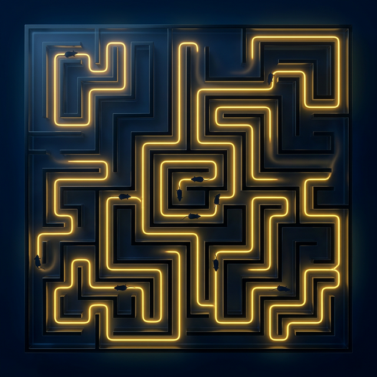

Lectura CELIDER 2026
¿Quién se ha llevado
mi queso?
Presentado por Antony Salcedo
Una reflexión profunda sobre cómo enfrentamos el cambio, el miedo y la búsqueda de nuevas oportunidades. Cuatro personajes, un laberinto y una lección que transforma vidas.
Explorar el contenido